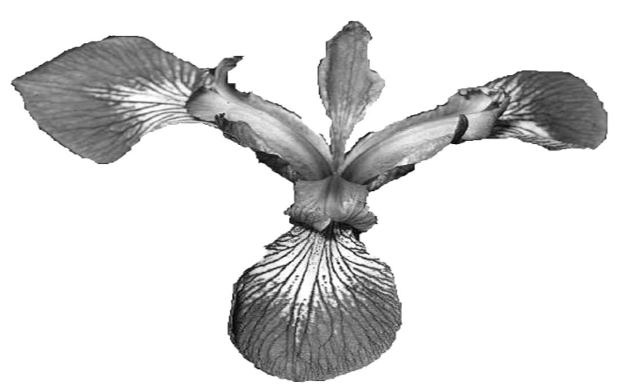
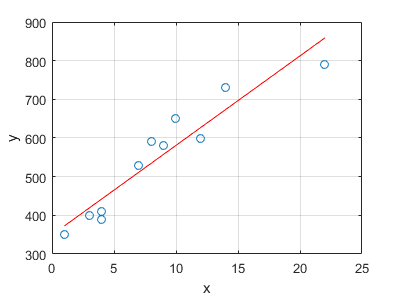
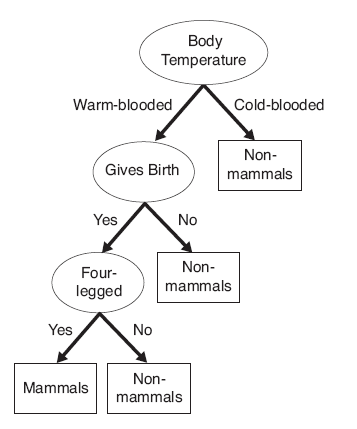
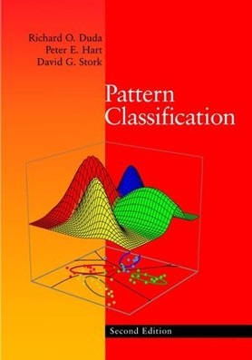

Slides
Related Materials
1. UCI Machine Learning Repository
Assignment 1 due date: Oct. 28

Assignment 2 due date: Nov. 25


Assignment 3 due date: Dec. 23
Instructor: Dr. Ying Shen (沈莹) (yingshen@tongji.edu.cn)
Evaluation: assignments(30%), project (65%), participation (5%)
Slides |
Related Materials |
|
|  |
1. UCI Machine Learning Repository |
|
|  |
Assignment 1 due date: Oct. 28 |
|
|  | ||
|
|
Assignment 2 due date: Nov. 25 |
|
|
|
||
|
|
Assignment 3 due date: Dec. 23 |
|
|
|
Notes:
1. Compress all files into a .zip file whose name is composed of student name and ID.
2. For the programming assignments, please use Matlab
3. All the documents you hand in, including comments in the source codes, should be in English.
1. Compress all files into a .rar or .zip file whose name is composed of student name and ID (such as "ID_name_project.zip").
2. All the documents you hand in should be in English.
Project contents
Program (30 points)
Report (35 points)
1. Describe the problem you want to solve;
2. A survey on the selected topic and related methds;
3. The structure (or workflow) and functionality of your program;
4. Performance evaluation;
5. Advantages and disadvantages of your method;
Marking scheme
Program: Origninality of the selected topic or applied method (published since 2010) (10'); Performance (15') Complexity of the project (workload) (5') |
Report: 1. (5'); 2. (10'); 3.(5'); 4. (10'); 5. (3'); Clarity (2') |
《机器学习》 周志华 清华大学出版社 |
|  | Pattern Classification Richard O. Duda, Peter E. Hart, David G. Stork |
|
 |
模式识别 张学工 清华大学出版社 |
Created on: Sep. 22, 2013
Last updated on: Dec. 4, 2013